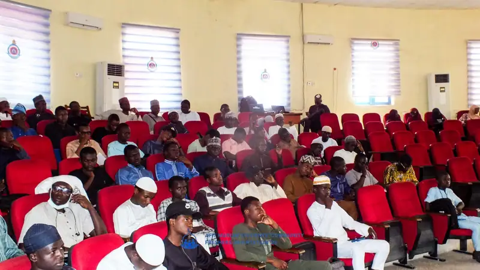
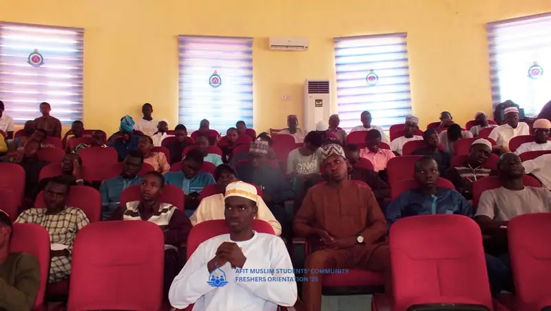
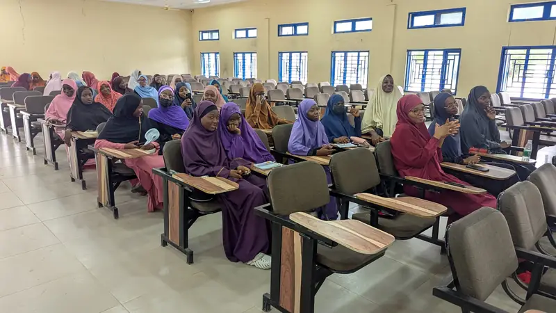
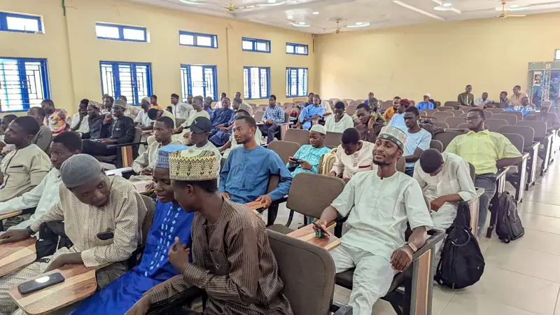
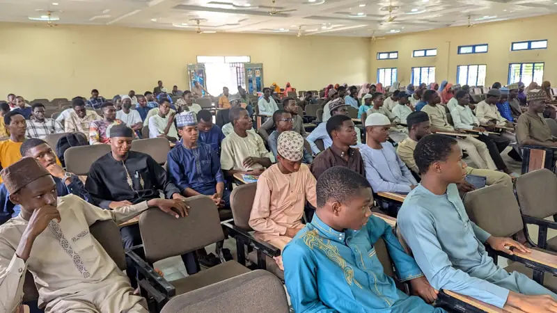
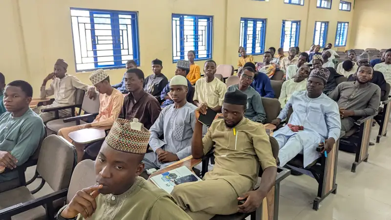

السلام عليكم ورحمة الله وبركاته
Freshers’ guide
Assalamu alaikum warahmatullah wabarakatuh, dear AFIT freshers! As you step onto campus for this exciting new chapter, we pray your journey and clearance go with absolute ease. This page has everything you need for clearance, your first weeks, and the people to call when you need help.
Freshers’ Orientation
Every session opens with an orientation for new Muslim students: you meet the community, learn where to pray between lectures, receive an academic survival guide and are paired with a senior student.
Navigating campus, guided by Islam in every step
Held on Saturday 8 November 2025, 9:00am to 12:00pm, at Mosugu Hall.



Freshers’ Orientation, 2024/1446 session
New brothers and sisters at the orientation in the lecture hall.




Prepare these before you go
Tick each one off as you get it ready. Your ticks are saved on this phone or computer.
Avoid a common delay
Check that the name on your JAMB CAPS matches the name on your O’Level results.
If there is a mismatch, get it corrected early at any JAMB CBT centre, before you start clearance.
Payment and verification
Do these in order, before you start the physical clearance route.
- Pay the acceptance fee firstPay it before you pay the school fees.
- Print every online payment receiptKeep the printed copies together with your documents.
- Get the receipts verified and stampedTake them to the Bursary Unit for physical verification and stamping before you go any further.
Your physical clearance route
Three stops, in this order. Carry your stamped receipts and all four sets of documents with you.
Bursary Unit
Have your online payment receipts physically verified and stamped.
Academic Branch
Submit your 4 complete sets of required documents.
Departmental Officer
Complete your registration with your department.
Places to know
Where you will go for clearance, for prayer and for the community.
Bursary Unit
First clearance stop. Your printed payment receipts are verified and stamped here.
Academic Branch
Second stop. Submit your four complete sets of documents.
Your department
Final stop. Complete your registration with the Departmental Officer.
AFIT Mosque
Daily congregational prayers, weekend Islamiyyah classes and the Friday Sisters Circle.
NAF Base Central Mosque
Where we pray Jumu’ah, beside the NAF Hospital.
Air Force Primary School
Where Eid prayers are usually held. The time is announced by the Imam at the Base Mosque.
Full prayer times and locations are on the prayer times page.
Stuck? Call a welfare officer
The welfare officers are available to help newly admitted students with day-to-day life in the school environment, to the best of their capacity.
Join the AMSC WhatsApp Community
Announcements, academic updates, clearance guides and peer support. Register once and you will be added.
- Welfare Officer I Brothers Najmudeen Mushaffa 0802 932 0846, call Najmudeen MushaffaChat on WhatsApp with Najmudeen Mushaffa (opens WhatsApp)
- Welfare Officer II Sisters Fatima Abubakar 0814 340 4271, call Fatima AbubakarChat on WhatsApp with Fatima Abubakar (opens WhatsApp)
- Asst. Welfare Officer I Brothers Abdullah Kabir 0907 202 7179, call Abdullah Kabir
- Asst. Welfare Officer II Sisters Aisha Yusuf 0903 556 1675, call Aisha Yusuf
Lost something during clearance?
Report it to the Amanah Desk, the AMSC lost-and-found. Found something? Report that too, so it gets back to its owner.
Need study materials?
Through our partnership with PDFNest, you get exam-recommended PDFs, quick polls and academic updates.
Your first weeks
Once clearance is done, this is where the community meets.
Where to pray
Prayer times, jama’ah times and where we pray daily, on Fridays and on Eid.
Weekly programmes
Islamiyyah, tutorials and the Sisters Circle, with days and venues.
Academic support
Tutorials taught by senior students, past questions and PDFNest.
Join AMSC
Register as a member and get every announcement.
Freshers’ questions
The questions new students ask us most.
Where do we pray Jumu’ah?
At the Nigerian Air Force Base Central Mosque, beside the NAF Hospital.
Where do I pray between lectures?
The AFIT Mosque holds all five daily prayers in congregation, and the Male Hostel Mosque is closest for brothers in the hostel. See the prayer times page for jama’ah times.
How do I join AMSC and the WhatsApp Community?
Fill in the registration form. An AMSC admin adds you to the WhatsApp Community with the number you give.
Who can help me if I get stuck during clearance?
Message or call a welfare officer. Their numbers are above.
I lost an item. What do I do?
Report it to the Amanah Desk, the AMSC lost-and-found.
Are there tutorials for 100 level?
Yes. Weekend tutorials cover first-year courses such as general mathematics and chemistry. The timetable for this session will be published on the academics page.
Save this guide and share it with your course mates
Keep everyone guided. The same guide is on our Instagram.
This guide reflects the process shared by AMSC for the 1448 AH / 2026–2027 session. If the Institute issues different instructions, follow the Institute.